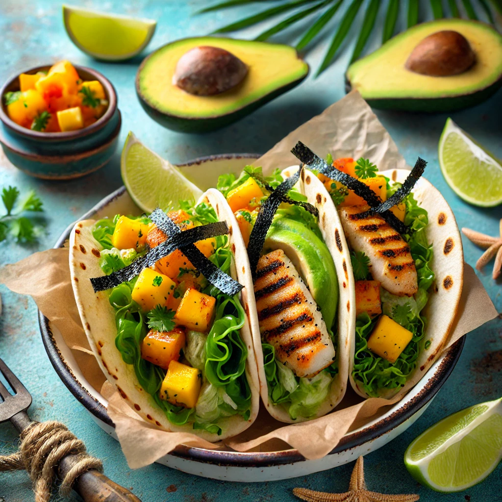

THE BUSTY MERMAID

Mermaid’s Treasure Tacos
Ingredienser og Oppskrift:
Velkommen til Mermaid’s Treasure Tacos – en eventyrlig smakfull opplevelse som får deg til å føle at du har funnet en skjult skatt på bunnen av havet!
Så, hva skjuler seg i disse tacosene, som er mer verdifulle enn gull? Her er oppskriften på hvordan du lager denne herlige skatten:
- 2 stk **havet fersk fisk** (Det er ikke en skatt uten sjømat!)
- 1 kopp **skrubbet sjøgress** (En smakfull tang, perfekt for eventyrere)
- 1 del **avokado** (Fyller deg med energi til å seile videre på eventyret)
- 1 liten **lime** (En saftig friskhet, som bølgen som skyller mot stranden)
- En håndfull **mango salsa** (For en tropisk opplevelse på hver bit!)
- 1 skvett **hot sauce** (For å sette fyr på enhver pirats sjel!)
Hvordan lage Mermaid’s Treasure Tacos:
- Start med å grilla fisken til den er perfekt mørt og saftig, akkurat som den skal være etter et dykk på dypet!
- Legg fisken i de myke tortillaene og topp med sjøgress, avokado, mango salsa, og et dryss av hot sauce.
- Avslutt med å presse lime på toppen, og vær klar for å oppleve en smakfull skjult skatt som ingen pirat kan motstå!
OBS: Ikke ansvarlig for at du kan ende opp med å være en pirat som søker etter flere skatter etter å ha smakt disse tacosene!